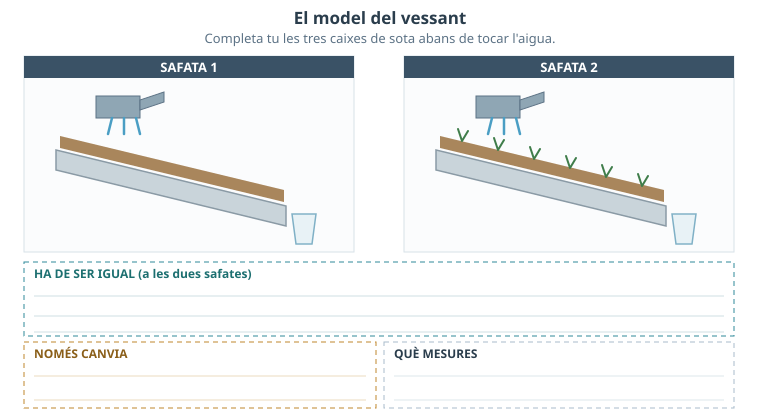
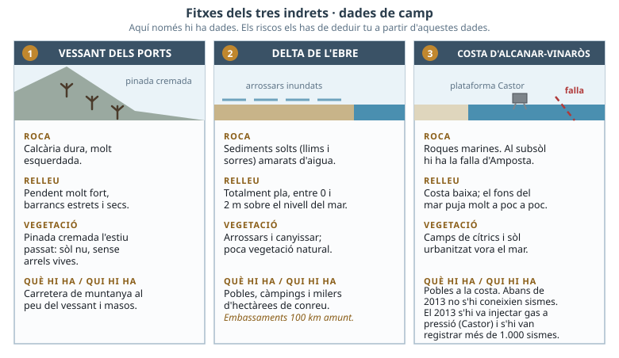
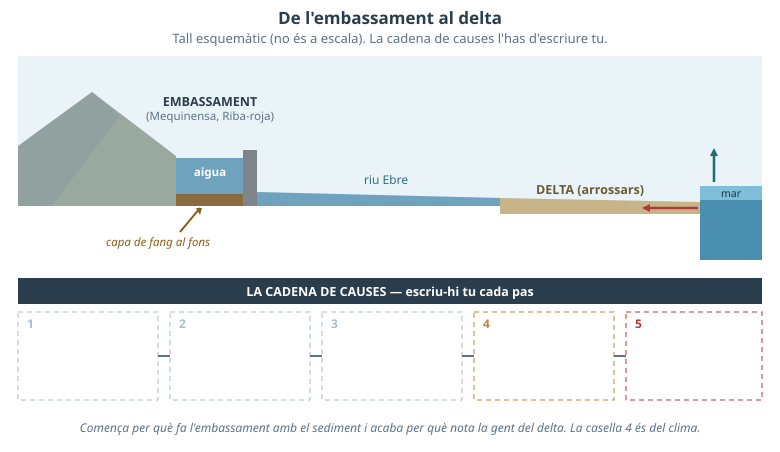

Interns: l'energia ve de dins de la Terra. · Externs: els mouen l'aigua, el vent i la gravetat a la superfície. · Induïts: el fenomen no existiria, o seria molt més petit, sense una acció humana.
Litologia: quin tipus de roca hi ha. · Talús: tall inclinat de terreny al costat d'una carretera. · Tàpia: paret de terra premsada, sense ciment. · Esllavissada: massa de terra i roca que llisca vessant avall. · Despreniment: blocs de roca que cauen.
Quin risc natural del teu territori has trobat? On i quan va passar i què va provocar?
Per què creus que va passar just en aquell lloc i no en un altre?
Si no has trobat cap cas, treballa amb un d'aquests dos: (a) la riuada del barranc que va tallar la carretera i va arrossegar cotxes després d'una tempesta de tardor; (b) el despreniment de blocs de roca sobre una carretera dels Ports després d'un hivern de gelades.
1a. Descompon el cas de l'apartat 0. Escriu què és cada factor en el teu cas concret, no la definició general:
| Factor | Com és en el TEU cas |
|---|---|
| Perillositat | |
| Exposició | |
| Vulnerabilitat |
1b. Sobre quin dels tres factors és més difícil actuar i sobre quin es podria actuar gairebé sense diners? Compte: reforestar o posar malles a un talús també toquen la perillositat, així que no val dir simplement que és intocable: has d'argumentar fins a quin punt i a quin cost.
1c. Qui hauria de prendre cada decisió, i per què just aquell?
| Factor | Qui ho hauria de decidir | Per què ell i no un altre |
|---|---|---|
| Perillositat | ||
| Exposició | ||
| Vulnerabilitat |

Fig.2 · Completa tu les tres caixes de la figura abans de començar. (La numeració de figures és compartida amb la versió B: la Fig.1 és l'exemple resolt, que en aquesta versió no necessites.)
2a. Escriu la hipòtesi amb direcció: què passarà i per què ho esperes («Si..., aleshores..., perquè...»).
2b. Resultats: què ha passat realment a cada safata i quina diferència has pogut mesurar?
2c. El model no reprodueix la realitat en algunes coses (escala, temps, tipus d'arrel, gruix de sòl, intensitat de la pluja). Tria'n dues i explica en quin sentit concret et podrien fer arribar a una conclusió exagerada.
2d. El model mesura sobretot arrossegada de sòl. Un vessant dels Ports va cremar l'estiu passat: quin factor del risc ha canviat exactament, per què el perill dura més d'un any, i quin tipus d'esllavissada no podries predir amb aquest model?

Fig.3 · Dades de camp dels tres indrets. Aquí només hi ha dades: els riscos els has de deduir tu.
3a. Envolta el vostre indret i completa. Per a cada risc, la prova ha de ser una dada concreta de la Fig.3:
| Risc | Prova (dada que el sosté) | Intern / extern / induït | Què hi ha afegit la gent |
|---|---|---|---|

Fig.4 · Del riu al delta. Completa tu les caselles 1-5 de la figura.
3b. Separa les tres parts del que va passar: què era natural i inevitable, quina decisió humana antiga hi va contribuir i què hi afegeix el canvi climàtic.
3c. Escriu com hauria de titular la notícia un diari que volgués ser rigorós, i explica per què «desastre natural» no ho és.
De quina dada surt el teu risc principal?La teva mesura, sobre quin factor actua?
4a. La teva proposta, punt per punt:
| Què cal respondre | La teva resposta |
|---|---|
| Quina mesura prioritzo | |
| És predicció, prevenció o correcció | |
| Sobre quin factor del risc actua | |
| Quant triga a fer efecte | |
| Qui s'hi oposaria i amb quina raó | |
| Què NO resol la meva mesura |
4b. Decidir sobre riscos no és només una qüestió tècnica: també és decidir qui assumeix quin perill. Posa un exemple del teu indret on una mesura protegeixi uns i perjudiqui uns altres.